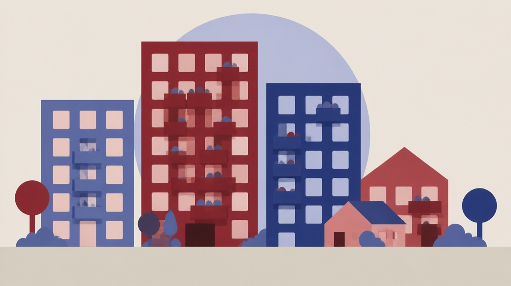

Besluttet 28. september, Kommunalbestyrelsen 2026-29, Frederiksberg
Vederlag til suppleanter huslejenævnene

Kort fortalt
- Hvem
- Kommunalbestyrelsen 2026-29, Frederiksberg Kommune
- Hvornår
- Mandag 28. september 2026
- Status
- Besluttet. Kommunalbestyrelsen tiltrådte indstillingen.
Er noget forkert her? Skriv til os
Læs hele sagen Kommunens egen tekst
Indstilling
Magistraten indstiller,
at suppleanter fremover modtager vederlag for hver behandlet sag i
overensstemmelse med taksterne nedenfor.
Anledning
De to huslejenævn på Frederiksberg er en selvstændig forvaltningsmyndighed, men nævnene
har ikke selvstændige økonomiske bevillinger, og kommunen afholder samtlige udgifter til
lokaler, sekretariatsbistand, honorering af nævnsmedlemmer mv.
Huslejenævnets formænd modtager 10.785 kr. om måneden, og de faste medlemmer
modtager 6.389 kr. om måneden for hvervet. Hvert nævn afholder normalt 12 møder om året,
og de nævnte vederlag dækker derfor forberedelse og behandlingen af sager på ét møde. Der
behandles i gennemsnit omkring 25 sager pr. møde.
Suppleanter modtager ikke vederlag, men diæter på 460 kr. for møder under 4 timer og 920 kr.
for møder over 4 timer. Der er ikke fra de senere år eksempler på, at der er udbetalt diæter for
møder over 4 timer.
Suppleanter indkaldes i praksis, når et af de udpegede medlemmer er inhabile. Der vil normalt
være tale om, at den udlejer- eller lejerorganisation, som det udpegede medlem er ansat i, har
sager på dagsordenen.
Der er eksempler op, at en suppleant har fået diæter på 460 kr. for at have forberedt og
behandlet mere end 10 sager på et møde. Mødediæter er skattepligtige.
Forvaltningen vurderer, at dette ikke kan anses for en rimelig honorering af arbejdsbyrden og
foreslår, at suppleanter fremover modtager vederlag pr. behandlet sag.
Forvaltningen foreslår, at suppleanter modtager 200 kr. for behandling af hver af de såkaldte §
19, stk. 3, sager (simple sager), og 350 kr. for hver af de øvrige sagstyper, dog således at det
samlede honorar for et møde ikke kan overstige det månedshonorar, der gives til de faste
medlemmer.
Forvaltningen vurderer, at dette vil give en samlet merudgift på ca. 15.-20.000 kr. om året, som
afholdes inden for egen ramme.
Det kan tilføjes, at en rimelig sammenhæng mellem honorering og arbejdsmængde kan have
betydning for mulighederne for at rekruttere og fastholde suppleanter til nævnene.
Forvaltningen kan med hensyn til andre kommuner til baggrund oplyse, at der huslejenævnene
imellem er forskel i aflønningen af suppleanter. Antallet af sager i nævnene kan dog også
variere meget.
Formand
Frederiksberg
Medlemmer
Suppleanter
460 kr./u 4 timer og 920
kr./o 4 timer
København
derudover 7.063,86 kr. pr
møde ved deltagelse i hver
af 4 ekstramøder om året*
Aarhus
Formand: 4 x diæter pr.
+ 2 x diæter pr. møde
møde **
Medlem: 2 x diæter pr.
møde
Odense
Formand: 600 kr. pr. time
Medlem: 285 kr. pr. time
Gentofte
460 kr./u 4 timer og 920
kr./o 4 timer
Anbefaling
Forvaltningen anbefaler, at Magistraten indstiller til kommunalbestyrelsen, at suppleanter
fremover modtager vederlag for hver behandlet sag i overensstemmelse med taksterne
beskrevet i sagen.
Bevillingsmæssige konsekvenser
Sagen har ikke bevillingsmæssige konsekvenser.
Borgmesterpåtegning
nej
Behandling
Magistraten
Kommunalbestyrelsen
Historik
Indstilling, den 21. september 2026, punkt 194:
Forvaltningen indstiller,
at Magistraten indstiller til kommunalbestyrelsen, at suppleanter fremover modtager
vederlag for hver behandlet sag i overensstemmelse med taksterne nedenfor.
Beslutning
Kommunalbestyrelsen tiltrådte indstillingen.
Kilde: Frederiksberg Kommune, Kommunalbestyrelsen 2026-29, referat fra mødet mandag 28. september 2026, punkt 3. Læs den originale sag hos kommunen.